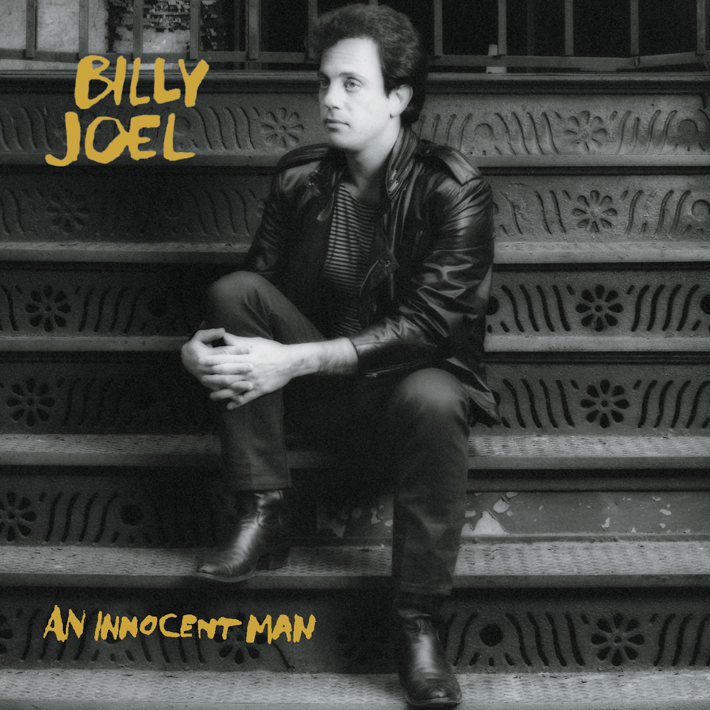
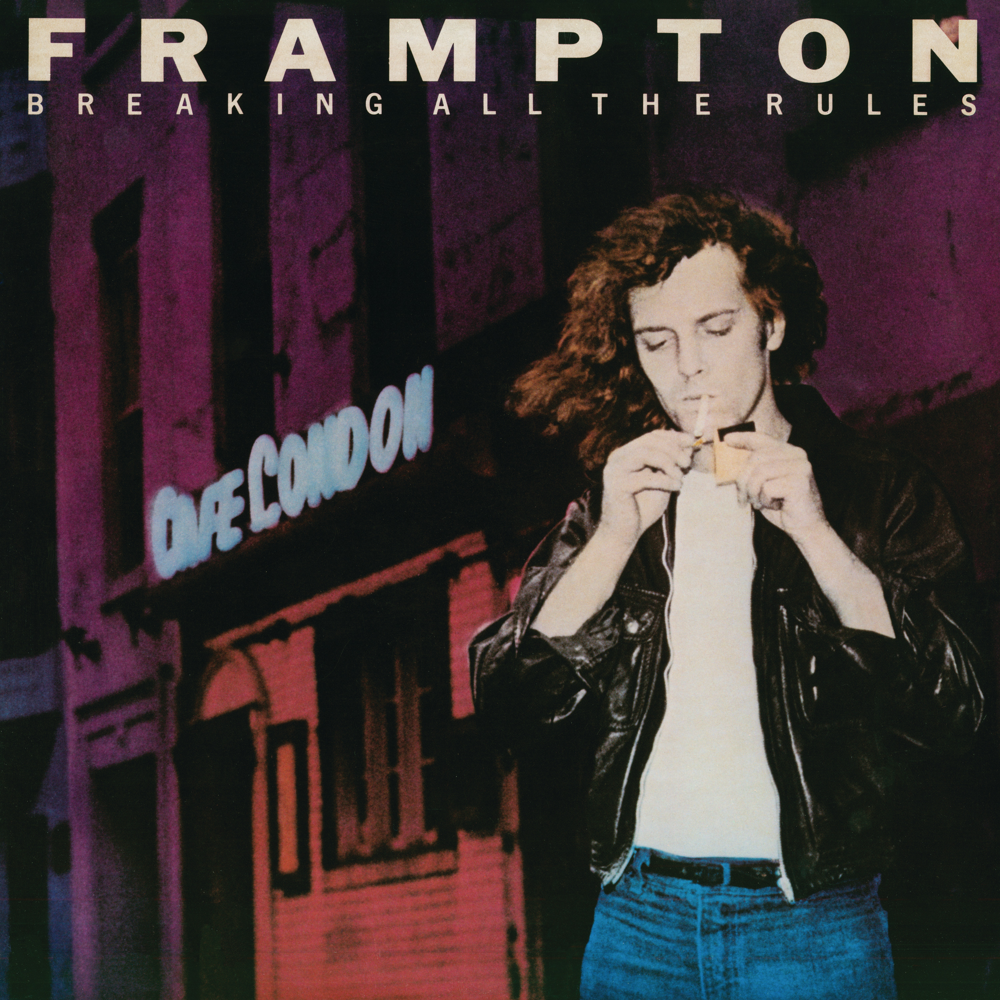
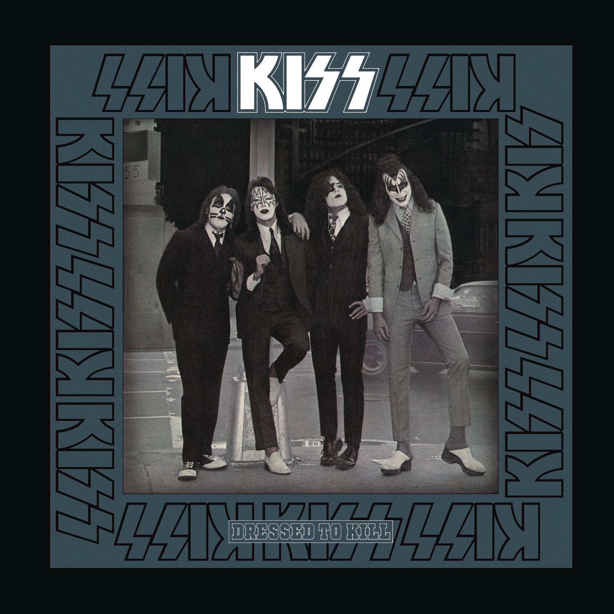
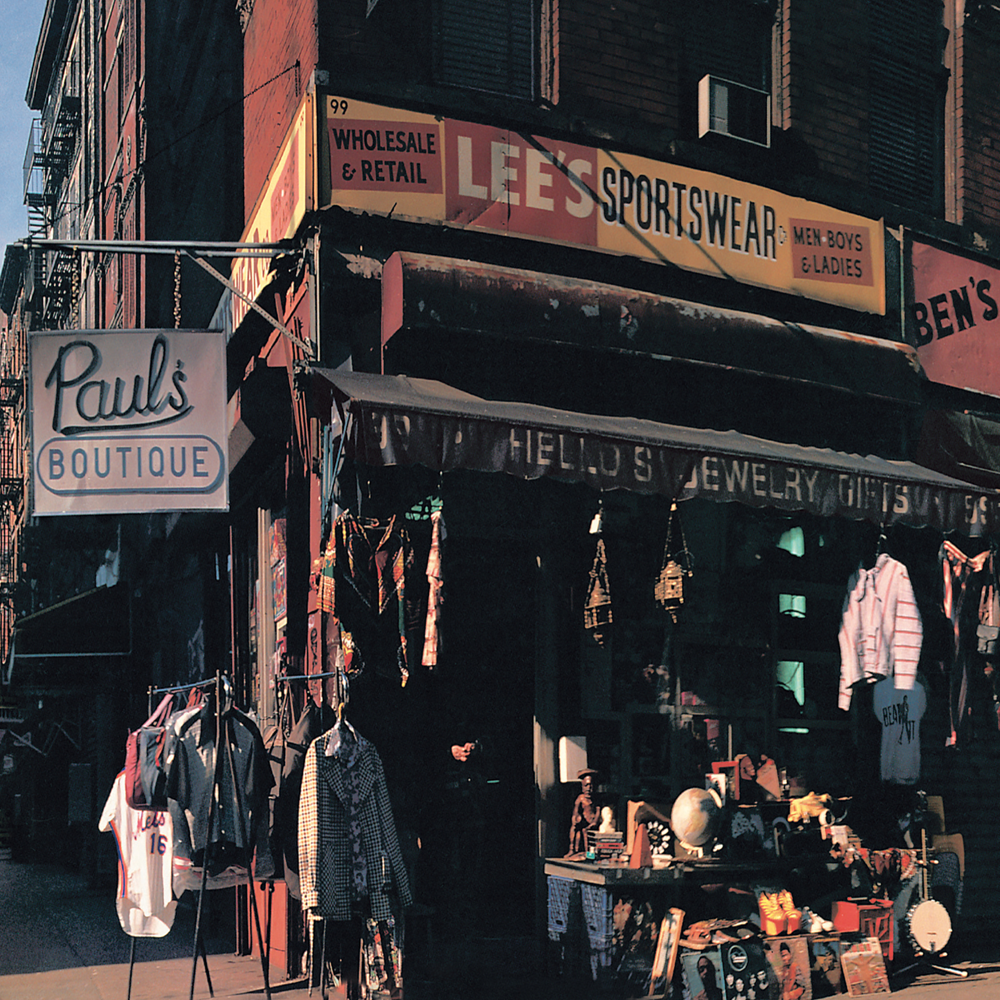
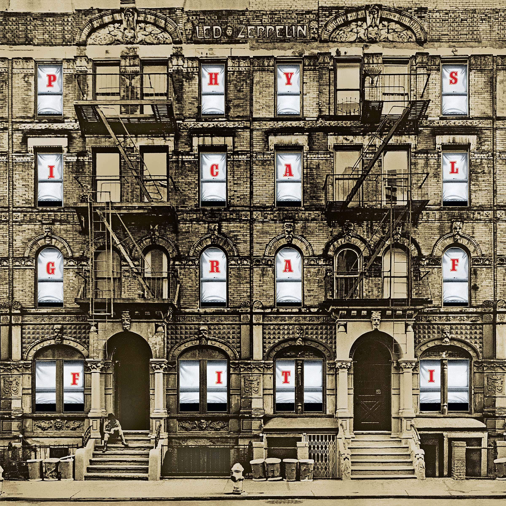

Album Cover NYC
Iconic album covers shot in New York City and their stories.
52nd Street
The cover for Billy Joel's 52nd Street was shot on the corner of 52nd Street and 6th Avenue in New York City. This location is significant because 52nd Street was once known as "Swing Street," famous for its jazz clubs and musicians.

My Life
After the Gold Rush
Released in 1970, Neil Young’s After the Gold Rush is a timeless exploration of reflection, disillusionment, and environmental concern. The album cover, shot by an 18-year-old Joel Bernstein, captures Young walking past an older woman outside New York University’s School of Law on Sullivan Street in Greenwich Village.
The image, accidentally blurred and grainy due to cropping and enlargement, perfectly mirrors the album’s themes of a world fading after its golden age. The woman on the cover was not planned — she happened to walk by, adding an unintentional but poignant touch to the photo. This spontaneous moment, much like the album itself, reflects the raw, fleeting beauty of an era in transition.
Don't let it bring you down
It's only castles burning
Just find someone who's turning
And you will come around

Don't Let It Bring You Down
An Innocent Man
The cover of *An Innocent Man* by Billy Joel features the artist in a somewhat vintage, black-and-white style, wearing a suit and tie. This reflects the album's overall theme, which is heavily inspired by the music and styles of the 1950s and early 1960s, including doo-wop, R&B, and soul. The image of Billy Joel on the cover can be interpreted as a nod to the era's classic, sharp-dressed crooners and the nostalgic feel of the album's sound.
The title *An Innocent Man* itself refers to Joel's reflections on his own life and the relationship themes explored throughout the album. The cover and the music both emphasize an idealized image of love, vulnerability, and regret, which is central to the album's storytelling. The album's aesthetic blends modern elements with a retro sensibility, using both musical and visual cues to evoke the past, but with Joel's own contemporary twist.
Uptown Girl
Breaking All The Rules
The cover of *Breaking All the Rules* by Peter Frampton, released in 1981, features a striking image of Frampton looking intense and almost defiant. He's depicted with his face in profile, and his eyes are obscured by a shadow, giving the cover a mysterious and rebellious vibe that ties into the album’s themes of breaking free from conventions and expressing individuality.
The artwork, with its dramatic lighting and bold design, is meant to reflect the album's overall tone—an exploration of personal freedom, defiance, and rock and roll spirit. The album itself marked a period of reinvention for Frampton, as he was seeking to move beyond the fame he achieved with *Frampton Comes Alive!* and explore a new musical direction.
The cover’s visual contrasts with the more commercial, smooth images often associated with the early 1970s, which aligns with the rebellious, "breaking all the rules" theme that the album title suggests. It’s a representation of Frampton’s push toward a new artistic identity and his desire to challenge both the music industry and his own past image. 
Breaking All The Rules
Dressed To Kill
The cover of KISS's *Dressed to Kill* (1975) shows the band members in sharp suits and ties, but still wearing their signature stage makeup. This contrast between formal attire and rock star persona reflects KISS's mix of glam and rebelliousness. The photo was taken in a New York City hotel room, and the band's serious expressions playfully challenge conventional rock-star imagery. It became an iconic representation of KISS’s larger-than-life persona—polished but with an edgy, rebellious twist.
Rock And Roll All Nite
Electric Ladyland
The cover of *Electric Ladyland* by The Jimi Hendrix Experience (1968) features two distinct versions, with the one you're referring to being the famous "nude women" cover, which was controversial at the time. However, the version you're likely thinking of, often associated with the album in later releases, was a photograph taken in Central Park, New York, that shows Hendrix sitting on a bench.
This alternative cover, which was originally considered for *Electric Ladyland*, reflects a more serene and reflective side of Hendrix, contrasting with the album's intense musical style. The Central Park image wasn’t used on the initial release but gained popularity later as an iconic image of Hendrix, showing him outside of the more flamboyant, energetic stage persona. The cover symbolized a quieter, more introspective moment for the artist.

Still Raining, Still Dreaming
Pat Boone
The cover of Pat Boone's 1956 album, also titled *Pat Boone*, was shot at Columbia University, where Boone is pictured sitting on the steps of a building, dressed in a sweater and slacks with a book in hand. The image was carefully chosen to reflect Boone’s wholesome, all-American image. At the time, he was known for his clean-cut persona and was often marketed as a family-friendly alternative to the more rebellious rock and roll artists like Elvis Presley.
The choice of Columbia University as the location adds an element of intellectualism and respectability, emphasizing Boone’s image as the ideal young man—smart, charming, and innocent. The casual, yet thoughtful pose suggests a wholesome, approachable nature, contrasting sharply with the more raucous image of rock and roll that was emerging in the 1950s. The album cover captured Boone's appeal to mainstream America during the height of his popularity, portraying him as not just a pop singer, but also a symbol of the era’s idealized youth and innocence.

Ain't That A Shame
Paul's Boutique
The cover of *Paul's Boutique* by the Beastie Boys (1989) is a well-known and iconic image, featuring a detailed photograph of the corner of an intersection on the streets of New York City. The location shown is actually the corner of Ludlow Street and Rivington Street in the Lower East Side of Manhattan. The image features a variety of street signs, advertisements, and graffiti, capturing the vibrant, urban energy of New York in the late 1980s.
The cover was designed by the creative team at the graphic design studio *Creative Services* (led by the artist Nathaniel "Nate" S.), who used the album's eclectic mix of samples and styles as an inspiration for the busy, cluttered nature of the artwork. The colorful, layered, and collage-like design gives a sense of the chaos and diversity that the Beastie Boys were known for, both musically and culturally.
Interestingly, the photo on the cover was taken just after the group signed to Capitol Records, and the location itself became a symbol of the gritty, streetwise, and authentic roots that defined the Beastie Boys' image. The album cover is also notable for its use of an unconventional, urban aesthetic that perfectly matched the unconventional nature of the album itself. The vibrant collage, filled with countless visual references, became a metaphor for the sampling and layering of music on the album.
The *Paul’s Boutique* cover is also remembered for its influence on album art in the hip-hop genre, setting a precedent for using street culture and urban imagery as part of the narrative of the music. 
Shake Your Rump
Physical Graffiti
The cover of *Physical Graffiti* by Led Zeppelin (1975) features a photograph of an old building at 96 and 98 St. Mark’s Place in New York City’s East Village. The weathered building was chosen for its historical and urban feel, matching the album's themes of raw energy and cultural history. The cover's unique 3D design incorporates cut-out windows, allowing for an interactive insert with images of the band and additional pictures. The building’s bohemian location and the innovative design symbolized the experimental nature of the album, marking a peak in Led Zeppelin’s career.
Trampled Under Foot